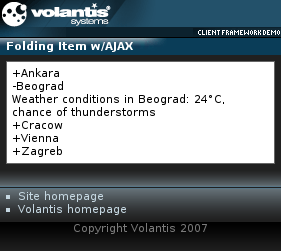

The Folding Item widget provides a mechanism by which content can be included within the page, but not made visible initially. It is made visible when the user requests it to be opened by selecting an action. The content that is revealed may be downloaded with the initial page or from an external source via AJAX. In the latter case, the download may be deferred until the item is opened.
The following example illustrates use of AJAX with the Folding Item widget. See also Hiding and showing content.

<widget:folding-item>
<widget:summary>Vienna</widget:summary>
<widget:detail>
<widget:load src="service/folding-item?itemId=Vienna"/>
</widget:detail>
</widget:folding-item><widget:load src="service/folding-item?itemId=Vienna"/>
<response:response xmlns="http://www.w3.org/2002/06/xhtml2"
xmlns:mcs="http://www.volantis.com/xmlns/2006/01/xdime/mcs"
xmlns:response="http://www.volantis.com/xmlns/2006/05/widget/response">
<response:head>
<response:link rel="mcs:theme" href="/main.mthm"/>
</response:head>
<response:body>
<response:folding-item>
<div>Weather conditions in <a href="http://www.wien.gv.at/">Vienna</a>: 22°C,
chance of thunderstorms</div>
</response:folding-item>
</response:body>
</response:response>
<?xml version="1.0" encoding="UTF-8"?>
<html xmlns="http://www.w3.org/2002/06/xhtml2"
xmlns:mcs="http://www.volantis.com/xmlns/2006/01/xdime/mcs"
xmlns:template="http://www.volantis.com/xmlns/marlin-template"
xmlns:widget="http://www.volantis.com/xmlns/2006/05/widget">
<head>
<title>Folding Item Widget with AJAX</title>
<link rel="mcs:theme" href="/themes/main.mthm"/>
<link rel="mcs:layout" href="/layouts/main.mlyt"/>
</head>
<body>
<template:apply href="templates/demo-main.xdtpl">
<template:binding name="title" value="Folding Item w/AJAX"/>
<template:binding name="content">
<template:complexValue>
<div class="widget">
<widget:folding-item>
<widget:summary>Ankara</widget:summary>
<widget:detail>
<widget:load src="service/folding-item?itemId=Ankara"/>
</widget:detail>
</widget:folding-item>
<widget:folding-item>
<widget:summary>Beograd</widget:summary>
<widget:detail>
<widget:load src="service/folding-item?itemId=Beograd"/>
</widget:detail>
</widget:folding-item>
<widget:folding-item>
<widget:summary>Cracow</widget:summary>
<widget:detail>
<widget:load src="service/folding-item?itemId=Cracow"/>
</widget:detail>
</widget:folding-item>
<widget:folding-item>
<widget:summary>Vienna</widget:summary>
<widget:detail>
<widget:load src="service/folding-item?itemId=Vienna"/>
</widget:detail>
</widget:folding-item>
<widget:folding-item>
<widget:summary>Zagreb</widget:summary>
<widget:detail>
<widget:load src="service/folding-item?itemId=Zagreb"/>
</widget:detail>
</widget:folding-item>
</div>
</template:complexValue>
</template:binding>
</template:apply>
</body>
</html>| Name | Purpose |
|---|---|
| div | A section used to add extra structure to documents. Style sheets can be used to control the presentation. |
| response:folding-item | Allows a Folding Item widget to load its content. |
| widget:detail | Specifies the content of the widget that is initially hidden. It is made visible when the widget:summary content is clicked. May contain XDIME 2 block elements in addition to nested folding items. |
| widget:folding-item | Outer container for a Folding Item widget that displays a summary of its contents, and when activated, reveals more detailed content. |
| widget:load | Controls the loading of a widget's contents in relation to the containing page. |
| widget:summary | Defines the visible title, label or thumbnail for content that is initially hidden. Clicking on the element content makes the widget:detail visible. |
| Core attributes | Attributes that are common to XDIME 2 elements. |